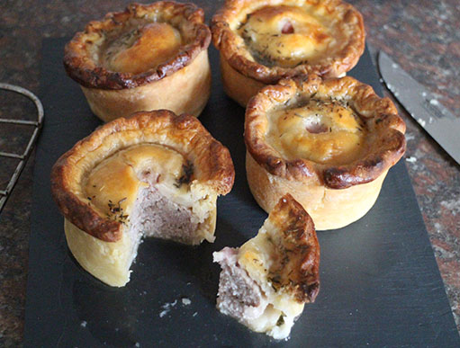

Pork Pie

A hot water crust pastry that will delight your senses.
Ingredients
For the filling
- 800g pork shoulder, minced or finely chopped
- 400g pork belly, half minced and half chopped
- 250g smoked bacon, cubed
- half a teaspoon of ground mace
- 2 large pinches ground nutmeg
- 1 tablespoon fresh chopped sage
- 1 teaspoon fresh chopped thyme
- half a teaspoon of salt
- 1 teaspoon of ground white pepper
For the pastry
- 575g plain flour
- 200g lard
- 220ml water
To Finish
- 1 egg, beaten
- 6 gelatine leaves
- 300ml chicken stock
Method
STEP 1
Heat the oven to 180C/160C fan/gas 4.
In a large bowl mix together all the ingredients for the filling.
STEP 2
To make the pastry, put the flour in a large bowl, then put the lard and water into a small pan and heat gently until the lard melts.
Bring just to the boil and then stir into the flour using a wooden spoon.
When the mixture is cool enough to handle, (it should still feel very warm) knead well until smooth.
STEP 3
Cut off 1/4 of the dough, wrap in cling film and reserve for the lid. Roll out the remaining dough to a circle and then place in the base of a non-stick 20cm spring-form cake tin.
Working quickly while the dough is warm and pliable, press the dough evenly over the base and up the sides of the tin.
Make sure there are no holes.
Fill with the meat mixture and pack down well.
Roll out the dough for the lid.
Place on top of the pie.
Pinch all around the edge to seal the pie.
Make a hole for steam in the centre, using the handle of a wooden spoon.
STEP 4
Cook in the oven for 30 mins then reduce the heat to 160C/140C fan/gas 3 and cook for 90 minutes.
Brush the top with beaten egg and return to the oven for a further 20 mins. Leave until cold.
STEP 5
Soak the gelatine in cold water for about 5 mins, then remove and squeeze out the excess water.
Heat the stock until almost boiling.
Remove from the heat and stir in the gelatine.
Leave to cool to room temperature.
STEP 6
Use a small funnel to pour the stock into the pie through the hole in the top.
Pour in a little at a time allowing a few seconds before each addition.
Place in the fridge to set overnight.
STEP 7
Enjoy!
HOME